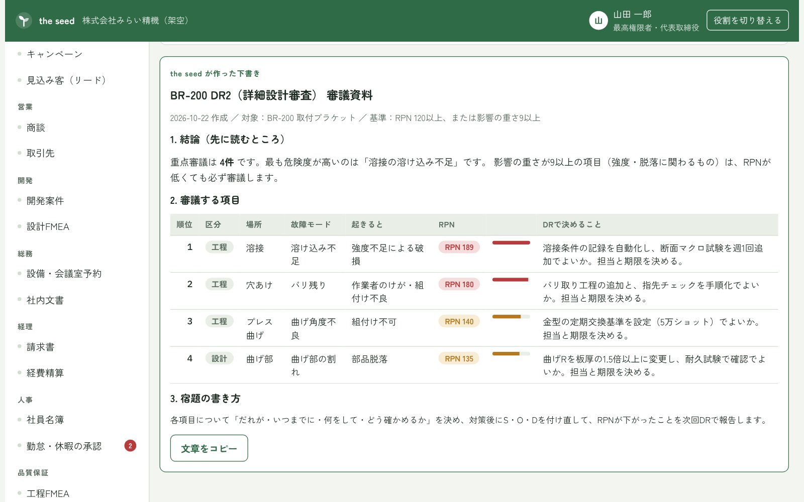
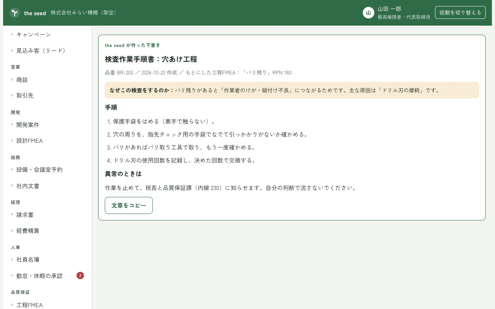
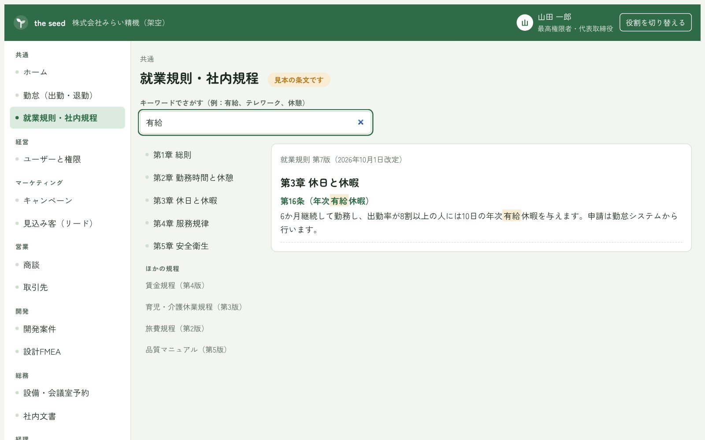
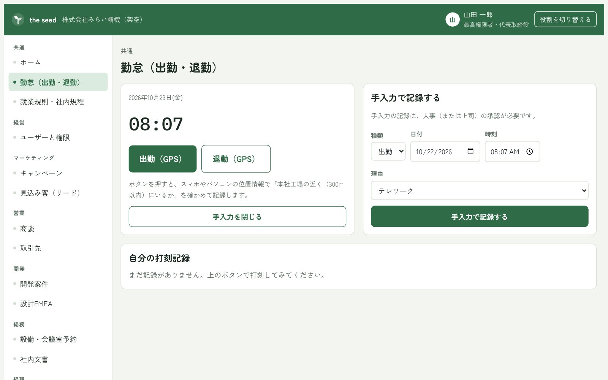

For Business
中小企業へのMother AI
「the seed」を作りませんか？
ベテランの頭の中にある知識や、社内に散らばった設計・品質の資料。それらをまとめて、日々の資料づくりを支える土台となるAIを、御社に合わせてお作りします。
the seed でできること
社内に眠っている設計・品質の知識をまとめ、日々の資料づくりを支える土台となるAI（Mother AI）、それが「the seed」です。御社に合わせてお作りします。
-
D/PFMEAからデザインレビューへ
設計FMEA（DFMEA）・工程FMEA（PFMEA）の内容を、デザインレビューの資料に反映できます。
-
品質検査の作業手順書を出力
品質検査の作業手順書など、現場で使う文書をAIで出力できます。
お問い合わせはフォームでお願いします。「ご相談の内容」に「the seed について」と、会社名・ご担当者名を書いて送ってください。
1社ごとに、御社だけの the seed に育ちます
the seed は、会社ごとに1つずつお作りします。御社の就業規則や社内ルール、FMEAを the seed に登録すると、その中身をもとに答えたり資料を作ったりする、御社だけのオリジナルの the seed になります。
種（seed）をまいて、御社の土壌で育てていくイメージです。登録する情報が増えるほど、御社の仕事に合ったAIになっていきます。
画面イメージ開発中
開発中の画面イメージです。表示している会社名やデータは、説明のための架空のものです。画像を押すと大きく表示されます。部署ごとの機能と画面は、the seed のページでくわしく紹介しています。





こんな会社におすすめです
- FMEAやデザインレビューの資料づくりに、毎回時間がかかっている
- 品質検査の手順が人によって違い、手順書が追いついていない
- ベテランの知識を、若手にうまく引き継げていない
ご依頼の流れ
お問い合わせ
フォームから、困っていることや作りたいものを送ってください。
ご相談
今の業務や資料をうかがい、AIに任せられる部分を一緒に整理します。
お見積書の送付
ご相談の内容をもとに、お見積書をお送りします。
構築
お見積りにご同意いただいてから、御社向けの the seed を作ります。